Open CSV, Excel and JSON files on iPhone
Querly opens CSV, Excel, JSON, SQLite and Parquet files on iPhone and iPad as a fast table, explains every column, and turns your data into charts in one tap. DuckDB runs on the device: no upload, no account. Made for iPhone Duo.
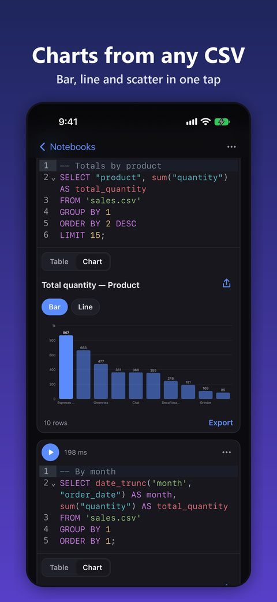
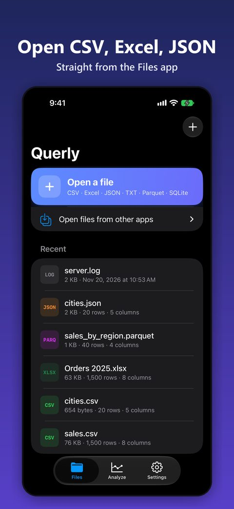
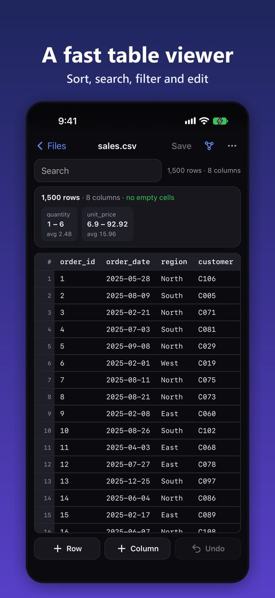
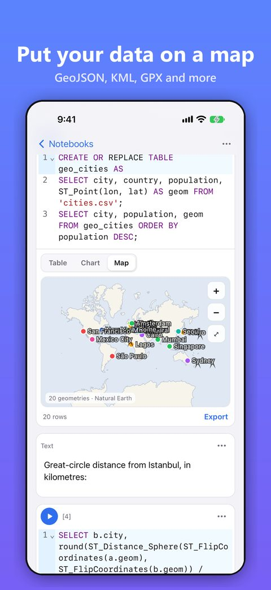
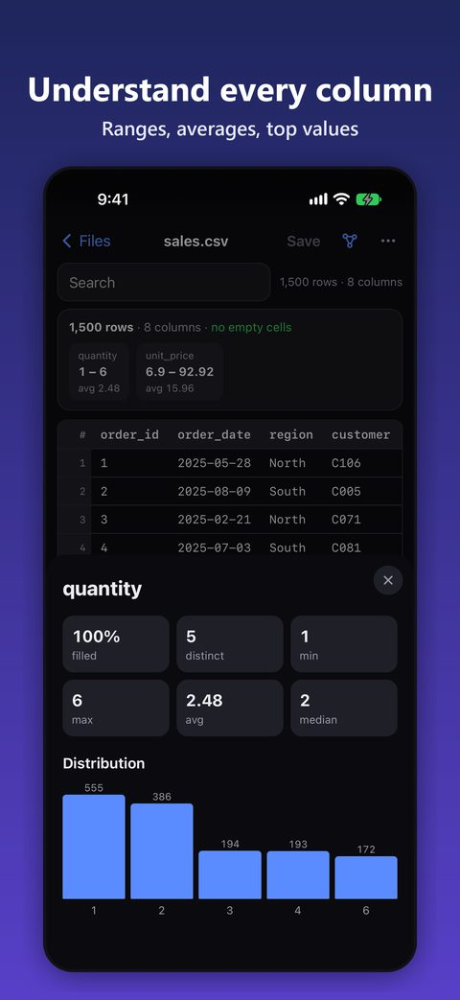
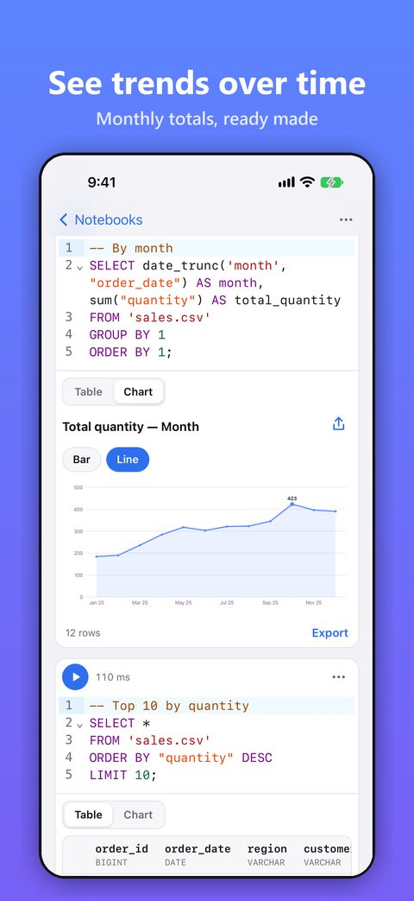
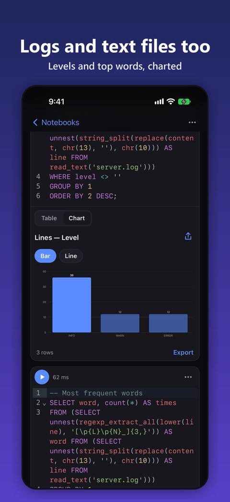
Your files, understood
Made for iPad and iPhone Duo
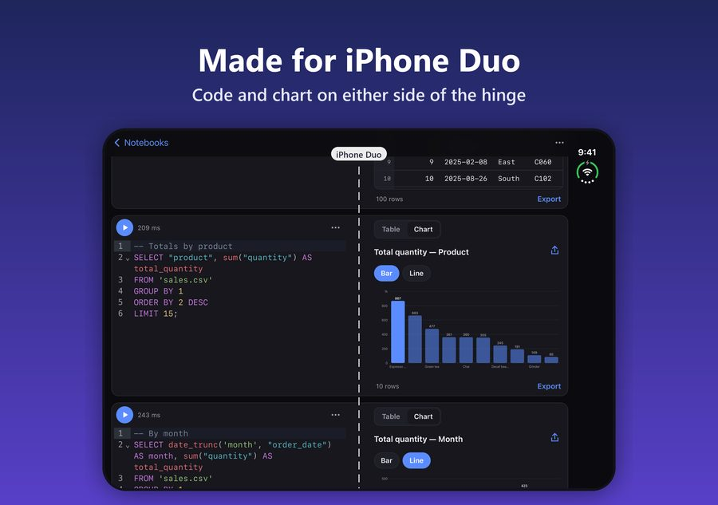
On wide screens (iPad, the open iPhone Duo, an iPhone in landscape) notebooks put the SQL on the left and the result on the right, and files become a grid of cards. On iPhone Duo the split follows the hinge, half open or flat.
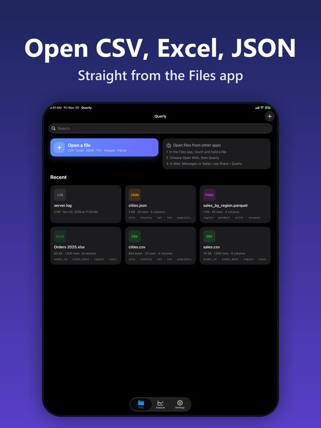
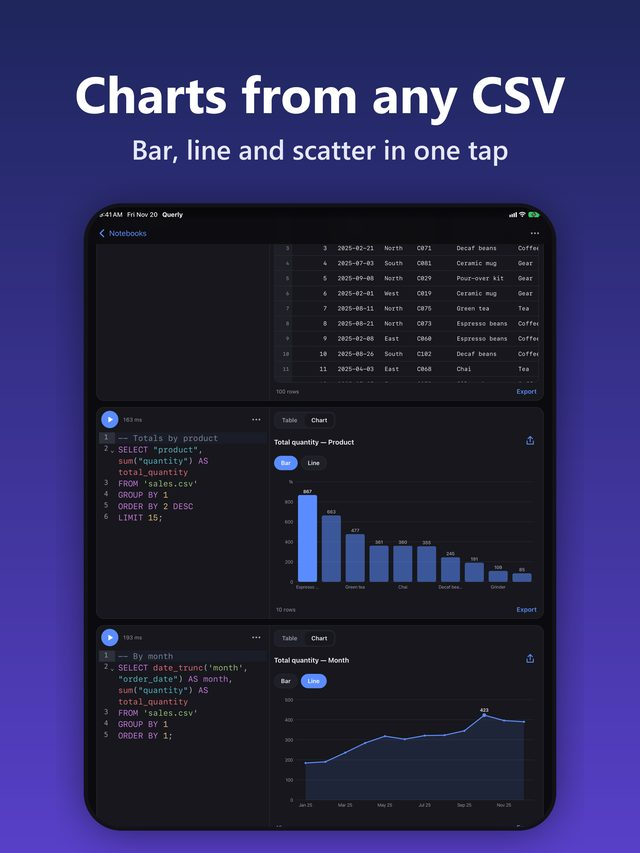
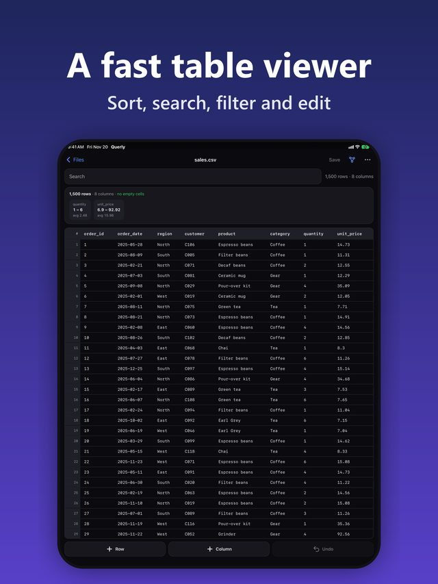
Questions
How do I open a CSV file on my iPhone?
In the Files app, touch and hold the CSV file and choose Open With › Querly, or use Share › Querly from Mail, Messages or Safari. It opens as a table you can sort, search, filter and edit.
Can I open Excel, Parquet and SQLite files on iPhone or iPad?
Yes. Querly opens .xlsx, .parquet, .sqlite and .db files for free, as well as JSON, JSON Lines and compressed .csv.gz files.
How do I make a chart from a CSV or Excel file on my phone?
Open the file in Querly and tap Analyze. Querly writes ready-made questions for the file and shows the answers as bar, line and scatter charts.
How do I run DuckDB on my iPhone?
Install Querly. It runs DuckDB 1.5 (DuckDB-Wasm) on the device, offline, with SQL notebooks that query your files by name.
Which DuckDB extensions work offline in Querly?
parquet, json, excel, icu, spatial, sqlite_scanner, fts, inet, vss, tpch, tpcds and autocomplete are bundled in the app.
Does Querly work on iPad and iPhone Duo?
Yes. Querly is a native iPad app and is made for iPhone Duo, with a side-by-side layout on wide screens that splits at the hinge on iPhone Duo.
Are my files uploaded anywhere?
No. Everything runs on your device; Querly makes no network requests and needs no account.